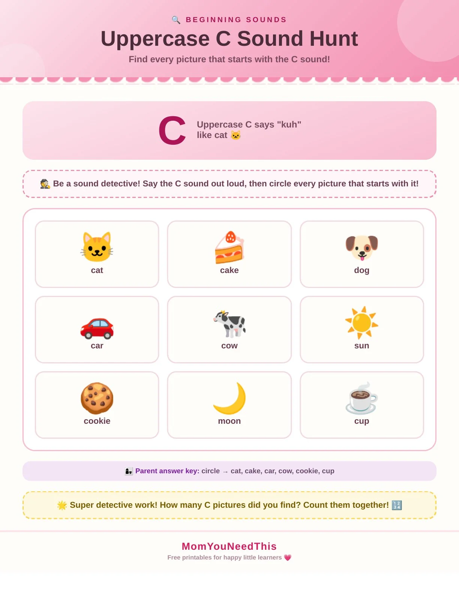

Uppercase C Sound Practice Recognize The Uppercase C And Its Sound
Start letter learning with this uppercase C printable. Your child will spot the capital letter and practise hearing its hard beginning sound — the /k/ in Cat, Car and Cake.
Quick Answer
Capital C is the letter that starts names, places and book titles — and this page turns it into a hunt. Preschoolers search a page of mixed letters for every uppercase C, circling each find while they practise its hard beginning sound, the throaty /k/ in Cat, Car and Cake. It builds phonemic awareness and letter recognition, is designed for ages 3-5, and prints free at home with no signup needed.
At a Glance
- Ages: Preschoolers (ages 3–5)
- Activity: Hunting every capital C hidden in a page of mixed letters
- Skills: Uppercase recognition and visual scanning
- Format: Printable worksheet (PDF)
- Cost: Free, no signup
🐱 Cat
🚗 Car
🍰 Cake

🔠 Find The Uppercase C
Say the letter name and sound together: “C says /k/.” Then find every uppercase C on the page and stamp or circle it. C hides among the other curved letters — O is the same curve closed up, so look for the gap that makes it a C.
⬇️ Download Free Printable 🖨️ Print🎁 Free printable for toddlers & preschoolers
🎵 Make The Sound Together
Make the hard c sound together: a tiny cough at the back of the throat — /k/, /k/, Cat! It is a quick, bouncy sound that cannot be stretched. Try it with all three words on this page: Cat, Car, Cake.
🧲 Letters Are Everywhere
Capital C is the letter that starts names, places and sentences, so it is worth spotting out in the world: the C at the start of Canada on a map, the C in a friend's name, the C on book covers and shop signs. Every sighting is a small win to celebrate.
🎨 Keep Exploring Free Letter Activities
More alphabet learning activities are added regularly for toddlers and preschoolers.
🎁 View All Free Resources🔊 The C Sound
The hard C sound is made at the back of the throat, like a tiny cough: /k/. It is a quick burst sound — c-c-Cat, c-c-Car. Every word on this page uses that hard sound.
C also has a second, softer sound. When C is followed by e, i or y, it usually turns soft and sounds like /s/: City, Circle, Cent. That is a discovery for later — this page keeps everything hard-C, so the /k/ sound can settle first.
Capital C begins Cat, Car and Cake, and it has a second job no small letter can do: it starts names and places — the C in Canada. It also begins cow, cup and cookie, good words for a spotting game after the printable.
🖨️ How to Use This Printable
Get started in minutes — everything here is free and made for busy parents.
- Download the printable. Tap the download button to save the free Free Uppercase C Sound Practice file to your device.
- Print it out. Use any home printer and regular paper — cardstock works great for pages little hands will use again and again. The print button opens the full-size page in a new tab if you prefer to print from there.
- Learn together. Sit with your child and cough out the /k/ sound each time a C is found. Check for the open gap together — a closed curve is an O, not a C. Short sessions work best.
- Explore more. Check the free printables linked below for your next activity.
❓ Free Uppercase C Sound Practice FAQs
Is this Free Uppercase C Sound Practice printable free?
Yes — every printable on MomYouNeedThis is 100% free to download and print. No signup, no payment, just tap the download button and print fresh copies of the C page whenever your child wants another hunt.
How do I use this uppercase C sound printable?
Tap download, print the page, and settle in together. First say the letter's name and cough out its hard sound — /k/, like Cat. Then hunt: circle every capital C hiding among the other letters, checking each one for its open gap. Short, playful sessions work better than long lessons for little learners.
What literacy skills does this practice?
Letter recognition, beginning sounds, and print awareness. Capital C also opens the door to an early phonics secret: c has two sounds — the hard /k/ on this page, and a soft /s/ in words like City. These are the core pre-reading skills that prepare children for phonics and reading.
🔗 More Free Printables You’ll Love
Pair this printable with more free learning activities from the MomYouNeedThis library.
- 🔊 Free Lowercase Letter C Sound PracticeFree printable lowercase letter c sound practice for little learners.
- 🔊 Free Uppercase Letter D Sound PracticeFree printable uppercase letter d sound practice for little learners.
- 🔊 Free Uppercase Letter E Sound PracticeFree printable uppercase letter e sound practice for little learners.
- 🔎 Free Find Letter C SoundFree printable find letter c sound practice for little learners.